PH-Neutral 0x7db
“If it is good, they stop making it”, the payoff printed on the conference necklaces, distributed to every participant, along with an über-l33t badge customized with our nickname and the key hash.

Being my first experience at an international security conf (I’ve only been to the ccc2k+7 camp), and being a ph outsider ‘cause I never participated to previous editions, the boot keynote held by FX, staffer and frontman, has been enlightening: “you ought to be here!”, he yelled while pointing at the stage, wearing a white shirt with the Phenoelit logo printed on both arms.
“This conference has never started on time”, he continued, “so there was no reason to do that for this last one”. the schedule is straightforward: party, the next days talks from 12.00PM to 7.30PM, then party, and the last days talks from 12.00PM to 5.30PM. definitely a setup well-playing with the available alcohol :-D.
Afterwards, another speaker informed us that the wi-fi access keys we received at the registration allows us to use a 6 APs/3 repeaters beast driven by an OpenBSD box – they want the audience to hack it because, well, “you are the Worst Case Scenario.” :-)
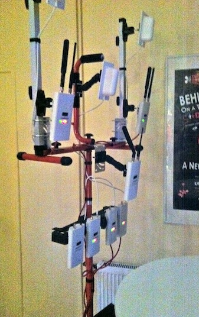
Then, the funny Hacker Hacker video was presented:
:-D
After a lousy and not so exciting first night (due to tiredness), we’ll wait and see what the next day would bring.
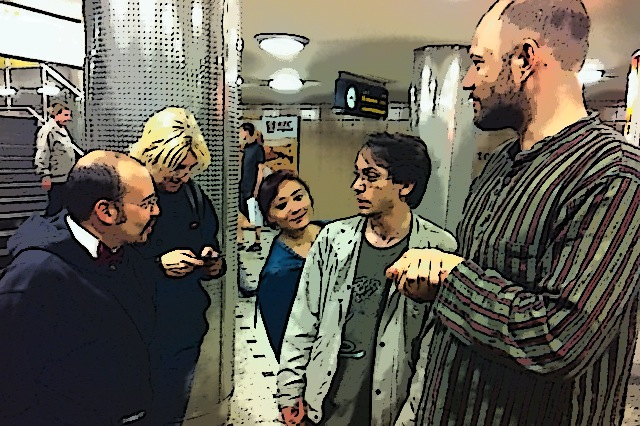
Sniffjoke – a sniffer-evasion toolkit
High capacity sniffers used in big cos and on border national gateways that collect user generated traffic on order to find possibly “criminal” patterns are today generally available for bandwidth to the 10Gbps, there will be soon appliances that’ll process streams of 100Gbps. Sniffjoke, by vecna and evilaliv3 is a tool that can inject into TCP connections outsider packets that will fool the intercepting sniffer but with no remarkable effect on the receiver. these packets for instance trick the sniffer into thinking that the connection has been reset even it is not true – by injecting a wrong-checksummed RST or a packet with a TTL less than 1 of the hop count – or try to consume its processing power by using known vendor-specific interpretations of the TCP RFC. Details: website, slides, wireshark thread.
WLAN router horror stories
Did you ever woder what happens when the wireless network password is directly tied to the device MAC address, from which it can be inferred because it is part of the essid? horror stories, as the an Austrian (ViBi) and a German (5M7X) researchers showed us. many carriers who sell wifi equipment ship it with similar vulnerabilities, as also mayhem and cyrax show us in this video (italian only)
We’re talking about a technology whose potential is not maximized, as a result leads to flawed the security measures, because of bad engineering and misleading instructions: some wifi apparatus manuals even recommended the user to never fiddle with the configuration and leave the default passwords in place. clever. Other examples of bad engineering include making the network key the last 4 bytes of the internal eth MAC address and then broadcasting that MAC via a multicast packet sent to 224.0.1.0 (Samsung G3200 / G2210 / G3220).
Other companies, such as the synchron who produce the easybox has a patented way to provide a key recognition method, and direct correspondence between the mac and the key seed. eventually, there are even companies who sell their devices with the management SSHD open on the external interface, and who base the network key entirely on the internal MAC. Couple it with default passwords and you get the picture.
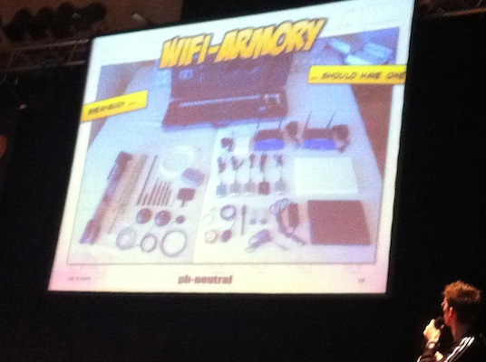
If you want to know more, you should get some armory and either reverse engineer the algorithms yourself, or participate to security conferences and ask the researchers for the slides :-). Once the industry will be ready, all the details will be revealed.
Hacking TETRA
Held by Harald Welte (@laf0rge), member of the gnumonks.de crew, the talk described a terrestrial radio communication technology that is similar to GSM but runs on lower frequencies of the spectrum, thus achieving wider coverage with less transceivers. TETRA employs ways to authenticate and encrypt communications, features a signaling channel over 140-chars messages are exchanged and identifies each user on the network using the match between the subscriber number and the terminal one.
TETRA is widely deployed over the world as a communication medium for public transport, public safety, firefighters, etc. it is a technology suitable for these uses, but laforge correctly reminded us that even if the tools allow us to implement secure networks, often the implementations of such tools is ineffective and prone to breakage.
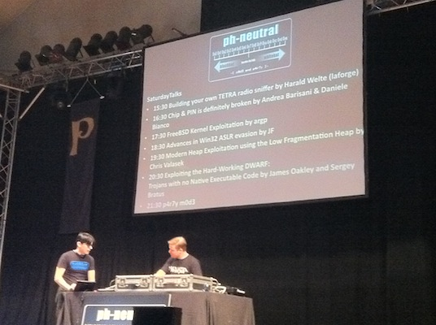
He showed us how the signaling on the network works. He started by first showing us packet dumps in wireshark, thanks to chinese hackers who wrote the dissectors. He was also able to associate to a tetra network used by BVG, the german public transportation system, and listen to a call between the headquarters and all train drivers: the former was asking the latters to push a button contemporarily. Yes, sir: in the 21st century you still need people to do that. Awesome. If you want to build your own, you should first learn how radio communication works, buy yourself a FUNcube dongle and check out the OsmocomTETRA project. An introduction is available on heise.de.
Printer Hacking
Find vulnerability into a printer management interface, write a java applet that exploits it, define hooks to drive it from Javascript, and your web-based printer vulnerability scanner is done!
I missed the first part of the talk, so I don’t have the details, but as the speaker told me later when I asked him how it all fitted together, “it’s everything on the paper!” so just RTFM here :)
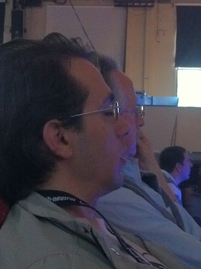
Chip & PIN is definitely broken
Moving on in the list of badly-implemented technologies, nowadays credit / debit cards are vulnerable to a typical downgrade attack when it comes to validating the PIN. There are different types of chips, ones that only allow plaintext authentication between the POS and the chip, others that employ a challenge-response mechanism, and almost every one of them allow the PIN to be validated online with the bank.
No matter what, the SIM exposes an interface to the card readers, that can be queried and whose communication can be eavesdropped by an intercepting device. Because cards must be backwards-compatible with existing POSes and viceversa, such an intercepting device is able to alter the advertised capabilities of the card and force the POS to use plaintext authentication, and then intercepting the pin as the user types it.
Such a skimmer is a 4×4cm device, that can be installed inside a POS or an ATM, thus possibly going unnoticed for a long period of time. And even if there are insurances that cover you against these frauds, if you’re a frequent traveller, you can hard time in demonstrating you were a victim, both because the card number and pin match, and because this is now considered as a “secure” technology that cannot be broken.
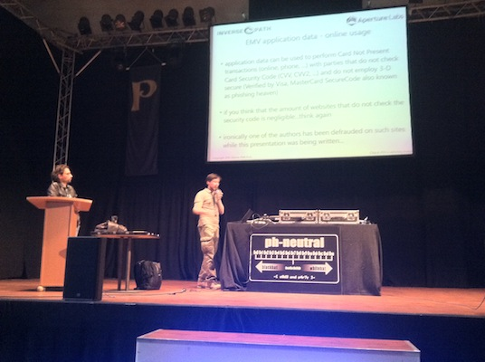
Thanks to Andrea Barisani and Davide Bianco for making us aware of the downgrade flaw. If you want to know more, here are their slide published on their company site, inversepath.com.
FreeBSD kernel exploitation
As years go by, stack smashing is still alive and powerful, as argp explained during his talk. CVE-2008-3531 is a known vulnerability of the FreeBSD kernel that allows code execution in kernel space, whilst the UMA – FreeBSD’s memory allocator – has known flaws in it as well.
Without going into deeper details, the main issue here is the “if it ain’t broken, don’t fix it” approach employed by many system administrators when it comes to production machines: as a result, they do not get updated for years. Maybe it’s not broken today (if ever, ya’now 0dayz?) but it will be broken tomorrow, and you’ll get pwned if you do not keep up to date. WORD.
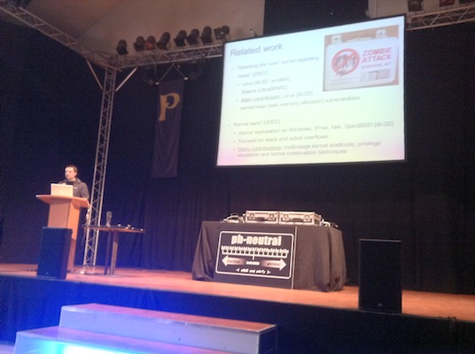
Advances in win32 ASLR evasion
When I think about Microsoft products, I always feel that they’re not built to be used by people, because it looks to me that coders who write them never care about using them in the first place. They do not eat their own dog food. just go on and try to use IE developer tools and you’ll get the point.
Their software is written for business, it must match some higher-order requirement agreed by some random manager 7 layers up in the hierarchy, and very often it fails to implement them correctly. Thus, as JF pointed out during the talk “Microsoft has spent a lot of money fixing the exploitation problem, but they only created more of them”. Word, dword and qword! :-)
ASLR is a mitigating factor for exploits that assume the return address of vulnerable code lies in at a well-known address in memory. These locations are used to compute where to write the shellcode in order to trigger its execution after exploitation. If the return address gets randomized (thus Address Space Layout Randomization), then the exploit will just crash the vulnerable software by making it reference an address outside its space.
Problem is that, for some obscure side effect, for each 16 threads you create, if their base address is even (0x02xxxxxx, 0x04xxxxxx), 13 of them will end up being based at a known location, thus making ASLR ineffective and bypassed. PWN!
Check JF slides out here – thanks for sharing @not_me!
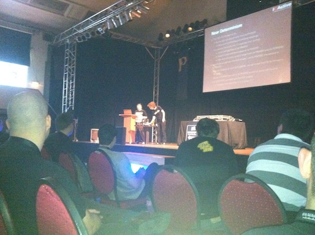
JF apologized at least 4 times before ending up closing its laptop and ending the presentation with vodka and gin, because he said that he did not do a good work in explaining but, as I also told him later, he was more than effective: it’s not easy at all to understand how all the side effects played together. Only he that was on this stuff for months was able to see the patterns in addresses and convey a successful exploitation of an ASLR-protected process. Enlightening!
Modern heap exploitation using the low-fragmentation heap
I’m no MM guy and I didn’t get most of the concepts of the talk, but its abstract is very explanatory:
Heap memory management has matured over time, but with complex new code comes new opportunity for exploitation. This presentation will focus on understanding the Low Fragmentation heap on Windows 7 (32-bit). After a foundation of integral concepts is laid, new exploitation techniques will be thoroughly discussed. Finally, we will use this new found knowledge to leverage supposed non-exploitable vulnerabilities. Specifically we will cover a case study showing how to craft an exploit for the IIS FTP 7.5 denial of service (http://blogs.technet.com/b/srd/archive/2010/12/22/assessing-an-iis-ftp-7-5-= unauthenticated-denial-of-service-vulnerability.aspx-= unauthenticated-denial-of-service-vulnerability.aspx), resulting in full control of EIP.
What is interesting is that in order to use a memory allocation optimization subsystem to do what you want, you have to mix and match 7 different attack primitives, understand thoroughly how the block allocations are made and how they interact with the host CPU. As well as battle with all the side effects in order to write in the program counter the address you want to execute. “@You say JMP, we say what addr@”, a T-shirt was correctly stating in front of me. :-)
Incredibly complicated as it sounds, Chris Valasek was able to find, exploit and explain the vulnerabilities, with a mental exercise that is both brilliant than inspirating: always dig deeper, and you’ll be able to reach any goal.
Here are Chris’ slides, but you’ll have to enable Flash unfortunately.
Exploiting the Hard-Working DWARF: Trojans with no Native Executable Code
Could you ever imagine that in every GCC-compiled binary may lie a complete virtual machine subsystem, that gets invoked on every call/ret and has the ability to read and write the heap and every cpu register? indeed it is, and it’s called DWARF, a debugging instrumentation used by GDB to help the developer debug his/her software.
“It’s a DWARF and ELF story…” LOL! :-D.
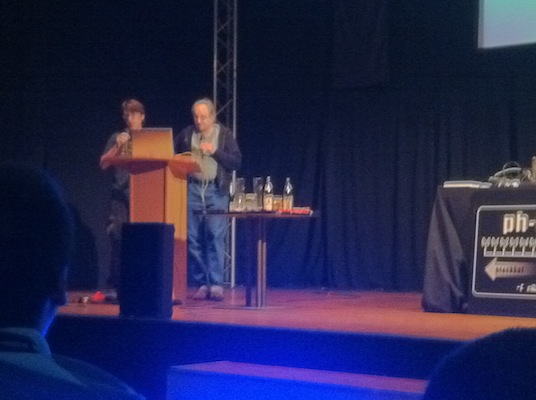
What’s interesting is also that DWARF code is not considered by analysis tools as being part of the object code of a binary, thus making it an injection vector to attach trojans to a binary. Moreover, DWARF is platform and architecture independent, being a finite-state machine on its own: a DWARF-based trojan can be used over multiple platforms and attached to any ELF binary.
If DWARF code is present, it gets executed for each function called and on each return, as the stack gets unwinded, and yes you can read and write the CPU and on the heap. Neat. For all the details, check the whitepaper out.
Here we see an example of hobby-ism and poor project management on the GCC side – no offense intended of course – but such a crafted and complex subsystem ends up being available in the vast majority of OSs, possibly making up an infection vector.
I infer this because DWARF is an obscure, undocumented, cargo-culted piece of code written because somehow today and tomorrow the GDB devs needed instrumentations, and GCC devs built in an excessively powerful tool to support them, but said tool can then be abused and no one really know how the first releases work – unless you skim through random posts on the GCC mailing list. More recent releases are pretty documented, though.
Funnily enough, I think to support GDB, even the LLVM compiler infrastructure, built with clean design from the ground up, uses DWARF! That said, the moral of the story is that ugly hacks today, will call you for trouble tomorrow – or the next day.
Party! (Music Here)
- “hey man, are you the guy behind the openbsd box acting as an host AP for the ph wifi network?”
- “yeah, I am”
- “may I ask you a root shell?”
- “you want… WHAT?”
- “yeah, you know, I’d like to issueifconfig,brconfig,pfctl -s,ls -lrt /etc | tail, stuff like that – just to see how the thing works :)”
Kudos to the OpenBSD panda, that didn’t give me a shell, but illustrated me how the dorepanda access point “cluster” works, creating a network that spans all the 802.11b/g and n spectrums. It load balances clients between the APs, using cryptography to verify the AP identity and trying to prevent eavesdropping.
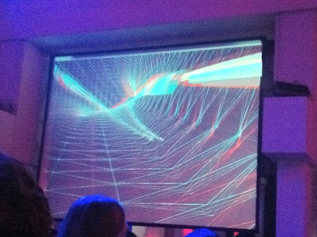
- “man, you are actually a grey beard at a security conference!”
- ”... so what?!”
... and then you talk with a 20-yrs experienced DBA that tells you “Oracle is flawed by design” and you chat with him about how the security scenario has changed over the years.
- “nothing really changed, it just got more complicated along the way”
- “you mean, the bottom line is always you have to snatch some shellcode in memory and then find a mean to execute it?”
- “exactly – you may have an NX bit, ASLR and canaries, but there’s alway a way around it.”
A good sysadm friend of mine told me similarly, in terms of “as long as I read enough documentation, I’m able to set up and deploy whatever system. no challenges anymore.”
To me, confs like this one make you wonder, think and activate mental circuitry that stimulate your passion: you see brilliant humans solving tricky problems, walking deeply into details and actually learning new things in the process. human beings whose model of the world includes sequences of interactions happening inside the machine. Like a skilled netadmin recognizes AS numbers from netblocks, a kernel hacker learns to recognize portions of the address space: he/she literally breathes within the operating system.
It amazes me how I found strong matches of Jeff Hawkins’ theory of intelligence (TED video) in hackers’ minds. I talked about the HTMs paper to the folks I met, and I was surprised no one of them knew about a technology aimed at building intelligent machines by reimplementing the human brain’s cortical algorithm in silicon. For instance, Chris Valasek and JF talks demonstrate the basis of expertise: more and more you receive inputs from a context, the more your brain will be able to see deeper and complicated patterns, because they get moved lower in the cortex hierarchy, whose job is to recognize details – as they did with ASLR and the low-fragmentation heap.
- “sir, you are the only one wearing a tie in this hall”
- ”...”
- “so you must definitely work for Microsoft!”
- “ahem, no…”
- “ah, ok so my assumption was incorrect. sorry for bothering! :D”
At 5:15, it’s really better to get to bed, waiting for the next good morning!
Day 3 – 98% Zero-Day Virus Detection
After such a party, both the social engineering and Exploit Next Generation++ talks were a bit foggy, I ever failed to recognized the metasploit source code language (ahem). :-)
Then shirtie (@skjortan) on stage illustrated how you can use a Bayesian / MAXENT classifier to identify unknown, 0day malware.
Exactly like an anti-spam filter catches spam by first analyzing a training set, identifying the recurring patterns and then matching them with novel data, malware as well as spam has typical features that can be used to find it. For instance, the presence of a reference to the CreateProcess API or the absence of the <a href="http://en.wikipedia.org/wiki/Pentium_FDIV_bug">_check_fdiv</a> one, to whether the binary is UPX-packed or not.
The technology looks effective, it is not a replacement of a signature-based AV rather it is an augmentation, because it is prone to false positives, but it is the only that identifies unknown, 0-day malware – the one for which no signatures exist.
Offensive XSLT
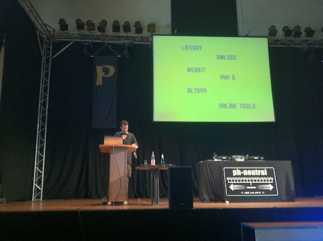
XSLT is a language used to transform XML documents into another form, and it is a turing-complete language executed either in the server or in the client context. it is used both by content management systems and in client-side applications, the most prominent example being the index of a subversion repository.
Because XSLT is a (functional) programming language, it offers means to read and write files and to execute code. If the user input is not sanitized and/or the XSLT engine exposed, it can be used to pwn a machine. Of course, the abusable features can be turned off if they’re not needed, or alternatively wrapped with a secure API if they are.
Check Nicolas Gregoire’s slides out here. Liferay users, you’ve been warned :-)
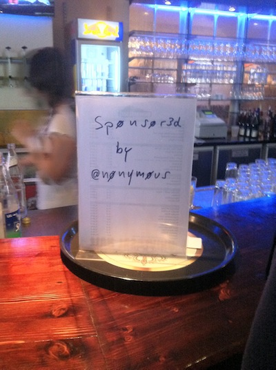
Final words
Thanks @nhaima for telling me about the conf and allowing me to have a grant (thanks nobody :)
Thanks @techdoer for editing the post – hopefully this is my first one without grammar errors :-D
Thanks @phenoelit and @41414141 for organizing the party (you’re da men), everyone who was there. I hope to see you soon on stage :). Yay!


About this entry
You’re currently reading “PH-Neutral 0x7db”, an entry on sindro.me
- Published:
- 07.02.11 / 17PM
- Updated:
- 10.08.16 / 02AM
- Sections:
- development
- Tags: